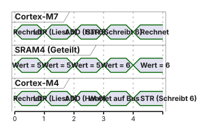
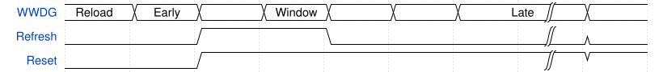

graph TD
classDef action fill:#FFFFFF,stroke:#1D1D1F,stroke-width:2px;
classDef decision fill:#F5F5F7,stroke:#E2001A,stroke-width:2px;
A((Start Task)) --> B(HAL_HSEM_FastTake):::action
B --> C{Resultat?}:::decision
C -- HAL_ERROR --> D[Warten...]:::action
D --> B
C -- HAL_OK --> E(Critical Section: RAM ändern!):::action
E --> F(HAL_HSEM_Release):::action
08 · Multicore-Synchronisation & Safety
HSEM, Watchdogs, MPU · EZS · DHBW Stuttgart
Prof. Dr.-Ing. Daniel Klünder
Willkommen in der Welt der Robustheit!
- Herzlich Willkommen zum 8. Termin unserer Vorlesung.
- Letzte Woche: Timing-Analyse mit der BlueBox.
- Davor (Termin 6): Unser erstes Multicore-Projekt mit Shared Memory und Cache-Kohärenz.
- Heute lösen wir das letzte große architektonische Multicore-Problem.
- Und wir widmen uns dem Thema Safety (Ausfallsicherheit).
- Ziel: Wir bauen Systeme, die sich selbst überwachen und im Notfall retten können!
Agenda für heute
- Recap: Unser Multicore-Handshake (Ping-Pong).
- Das ungelöste Problem: Multicore Race Conditions.
- Hardware Semaphores (HSEM): Atomarität auf Bus-Ebene.
- Safety in Embedded Systems: IWDG und WWDG (Fenster, EWI).
- Speicherschutz mit der MPU (Null-Pointer, Stack Guard).
- Labor: HSEM-Ping-Pong umbauen und WWDG live crashen.
Recap: Der Ping-Pong Datenaustausch
- In Woche 6 haben wir Daten über den SRAM4 ausgetauscht.
- Wir nutzten ein strenges Handshake-Protokoll:
- Der Ablauf: Der M7 schreibt den Payload, setzt
m7_ready = 1und wartet. - Der M4 liest, schreibt und setzt
m4_ready = 1. - Das System war strikt synchron. Es gab keine Kollisionen.
Das ungelöste Problem
- Was passiert in der Realität?
- Beide Kerne arbeiten völlig asynchron.
- Der Cortex-M7 (Ethernet-Stack) und der Cortex-M4 (Motor-Regler) wollen gleichzeitig auf einen globalen Fehler-Counter im SRAM4 zugreifen.
- Wir wollen
shared_data.error_count++ausführen. - Beide Kerne rufen (ohne Handshake) diesen Befehl auf.
- Ergebnis: Datenkorruption.
Warum ein FreeRTOS-Mutex hier versagt
- „Wir wissen doch, wie man das löst! Wir nehmen einen Mutex!“
- Falsch! Ein FreeRTOS-Mutex (
osMutexAcquire) funktioniert hier nicht. - Warum?
- Der Cortex-M7 läuft bei uns Bare-Metal (er kennt die FreeRTOS-API gar nicht).
- Selbst wenn beide Kerne FreeRTOS nutzen würden: Jeder Kern hat sein eigenes, isoliertes OS im RAM!
- Der Scheduler des M4 hat keine physikalische Kontrolle über die Register des M7.
- Ein reines Software-Schloss reicht bei Multicore nicht aus.
Die Multicore Race Condition
- Wie sieht die Zerstörung auf dem Bus aus?
- Zähler steht auf \(5\) (im SRAM4).
- Der M7 liest die \(5\) in sein CPU-Register und addiert zu \(6\).
- Der M4 liest (1 Taktzyklus später) ebenfalls die \(5\) in sein Register und addiert zu \(6\).
- Der M7 schreibt die \(6\) in den SRAM4.
- Der M4 schreibt seine \(6\) in den SRAM4.
- Zwei Fehler aufgetreten, aber der Zähler stieg nur um 1!
Visualisierung: Multicore-Zerstörung

- Die AXI-Bus-Matrix regelt zwar den Stau beim Schreiben (Takt 3 und 4), aber der logische Schaden ist bereits angerichtet!
Die Anforderung: Ein Hardware-Schloss
- Wir brauchen ein Schloss, das:
- Für beide Kerne physikalisch sichtbar ist.
- Auf Hardware-Ebene atomar arbeitet.
- Eine Lese- und Schreib-Operation in einem einzigen Bus-Takt garantiert (Test-and-Set).
- Die Antwort von ARM / STMicroelectronics: Das HSEM-Modul.
Einführung in Hardware Semaphores (HSEM)
- HSEM = Hardware Semaphore.
- Ein dediziertes Hardware-Modul im STM32H755.
- Es bietet 32 unabhängige, physikalische Schlösser (HSEM 0 bis HSEM 31).
- Jeder Kern kann jedes dieser 32 Schlösser sperren oder freigeben.
- Wichtig: HSEM ist konzeptionell ein Mutex (mit Ownership), obwohl „Semaphore“ im Namen steht!
HSEM Architektur im STM32H755
- Wo liegt das HSEM-Modul?
- Es sitzt zentral am AHB4-Bus und ist für den M7 und den M4 gleichwertig erreichbar.
- Der 2-Step-Lock:
- Wenn ein Kern das Schloss sperrt, trägt die Hardware die Core ID (z. B. M4) in das HSEM-Register ein.
- Gleichzeitig wird eine Process ID eingetragen (z. B. welche FreeRTOS-Task den Lock angefordert hat).
- Das Schloss gehört nun diesem spezifischen Task auf diesem spezifischen Kern!
Atomarität auf Silizium-Ebene
- Was passiert, wenn M7 und M4 exakt in derselben Nanosekunde den HSEM-Sperrbefehl senden?
- Die Bus-Matrix-Arbiter-Magie:
- Die Bus-Matrix hat einen Hardware-Arbiter (Schiedsrichter).
- Dieser Arbiter erzwingt physikalisch, dass ein Zugriffs-Request immer um mindestens einen Taktzyklus verzögert wird.
- Der erste Request, der durchkommt, führt ein atomares „Read-Lock“ aus.
- Der zweite Request liest bereits den gesperrten Zustand aus.
- Auf Hardware-Ebene gibt es keine Gleichzeitigkeit!
Die HAL-API für HSEM
- Sperren (Acquire)
HAL_HSEM_FastTake(HSEM_ID)- Liefert
HAL_OK, wenn wir das Schloss bekommen haben. - Liefert
HAL_ERROR, wenn der andere Kern (oder eine andere Task) es bereits besitzt.
- Entsperren (Release)
HAL_HSEM_Release(HSEM_ID, ProcessID)- Gibt das Schloss frei, aber nur, wenn wir der rechtmäßige Besitzer sind!
- Achtung:
FastTakeblockiert nicht! Es liefert sofort das Ergebnis (Try-Lock).
Flowchart: HSEM Take
- Wenn wir
HAL_ERRORbekommen, müssen wir die Anforderung wiederholen.
Warten auf den HSEM: Polling vs. Interrupts
- Wir erinnern uns: Spinlocks (
while(take != OK)) verbrennen CPU-Zeit. - Bare-Metal (M7):
- Hier können wir pollen. Eine kurze
while-Schleife um denFastTakeist vertretbar, wenn die Critical Section des M4 sehr kurz ist.
- Hier können wir pollen. Eine kurze
- FreeRTOS (M4):
- Polling zerstört unsere Task-Auslastung!
- Wir müssen das OS nutzen (
osWaitForever), aberFastTakehat kein Timeout!
- Wie lösen wir das? Mit HSEM-Interrupts!
HSEM Interrupts: M7 weckt M4-Task
- Das HSEM-Modul kann Hardware-Interrupts auslösen!
- Der smarte Workflow für den M4:
- M4 ruft
FastTakeauf \(\rightarrow\) Besetzt (Fehler). - M4 aktiviert den HSEM-Interrupt für dieses Schloss und legt seine FreeRTOS-Task über einen Binären Semaphor schlafen (
osWaitForever). - M7 rechnet fertig und ruft
Releaseauf. - Hardware löst einen Interrupt auf dem M4 aus!
- Die ISR des M4 gibt den Binären Semaphor frei \(\rightarrow\) Die M4-Task wird vom OS blitzschnell geweckt und holt sich das Hardware-Schloss!
- M4 ruft
Multicore Deadlock-Gefahr
- Ein Horrorszenario im Multicore-System:
- Der M7 sperrt das Hardware-Schloss (HSEM).
- Genau in diesem Moment führt ein fehlerhafter Pointer auf dem M7 zu einem Hard Fault Exception (Crash).
- Der M7 hängt für immer in der Fehlerschleife.
- Der M4 versucht den HSEM zu holen, wird blockiert und wartet ewig.
- Das gesamte System ist durch einen toten Kern verklemmt!
Die Lösung: HSEM Clear by Core ID
- Die ST-Ingenieure haben diesen Fall bedacht.
- Wenn der M4 feststellt (z. B. durch einen Heartbeat-Timeout), dass der M7 abgestürzt ist, kann er die Regeln brechen!
- Die Funktion:
HAL_HSEM_ReleaseAll(Key, CORE_ID_M7) - Der M4 sendet ein Notsignal an das HSEM-Modul: „Brich alle Schlösser auf, die dem M7 gehörten!“
- Der M4 kann das System danach selbstständig neustarten oder in einen sicheren Zustand überführen.
Zusammenfassung Hardware-Semaphoren
- Normale Mutexe (Software) funktionieren nicht über OS/Core-Grenzen hinweg.
- Das HSEM-Modul löst Race Conditions auf der Ebene der Bus-Matrix (HSEM an AHB4).
- Locks vergeben die Core ID für exklusives Besitzrecht.
- Wir nutzen Interrupts statt Polling, um FreeRTOS-Tasks bei belegten Schlössern schlafen zu legen.
- Im Notfall können Schlösser eines abgestürzten Kerns aufgebrochen werden.
Was ist „Safety“ in Embedded Systems?
- Bisher haben wir uns auf „Synchronisation“ konzentriert (Fehler vermeiden).
- Was passiert aber, wenn der Fehler trotzdem auftritt?
- Safety (Funktionale Sicherheit):
- Schutz von Menschenleben und Umwelt vor Fehlfunktionen der Software/Hardware.
- Reguliert in Normen wie der ISO 26262 (Automotive).
- Ziel: Wenn das RTOS in einem Deadlock hängt, muss ein unabhängiges System den Stecker ziehen und neustarten!
Ursachen für System-Crashes
- Warum stürzt eine eigentlich gut getestete Software plötzlich ab?
- Interne Ursachen:
- Deadlocks durch falsch gesetzte Mutexes.
- Endlosschleifen (
while) durch fehlerhafte Sensorwerte. - Stack Overflow im RAM.
- Externe Ursachen (Umwelteinflüsse):
- EMI (Elektromagnetische Interferenz): Ein Funke an einem dicken Elektromotor induziert Spannung auf der Platine.
- Bit-Flips: Kosmische Strahlung ändert physikalisch eine 0 im RAM zu einer 1 (aus einer Schleife bis 100 wird plötzlich eine Schleife bis 65535!).
Das Konzept des Hardware-Watchdogs
- Die Analogie: Der Totmannschalter in Zügen. Der Lokführer muss regelmäßig ein Pedal treten. Tut er es nicht, bremst der Zug automatisch.
- Der Watchdog (Wachhund) in der Hardware:
- Ein eigenständiger Zähler-Chip auf der Platine (oder im STM32).
- Der Zähler zählt unerbittlich rückwärts: \(1000 \rightarrow 999 \rightarrow 998\ldots\)
- Fällt er auf \(0\), zieht die Hardware die RESET-Leitung der CPU! Das gesamte System startet hart neu.
Die Pflicht der Software (Kicking)
- Damit das System nicht ständig neustartet, muss die Software den Watchdog „füttern“ (Kicking / Refreshing).
- Die Software sendet periodisch einen Befehl an das Hardware-Register.
- Der Befehl setzt den Zähler wieder auf seinen Maximalwert (z. B. \(1000\)).
- Die Logik:
- Läuft die Software fehlerfrei, wird der Zähler regelmäßig zurückgesetzt.
- Hängt die CPU in einer Endlosschleife, wird der Refresh-Befehl nicht erreicht.
- Der Zähler fällt auf \(0\) \(\rightarrow\) Reset!
Watchdog Typ 1: Independent Watchdog (IWDG)
- Der STM32H755 besitzt zwei verschiedene Watchdogs. Der erste ist der IWDG.
- Er heißt „Independent“ (Unabhängig), weil er seine eigene, isolierte Taktquelle besitzt.
- Er läuft auf dem LSI-Oszillator (Low-Speed Internal).
- Eigenschaften des LSI:
- Frequenz: \(\approx 32\,\mathrm{kHz}\) (sehr langsam, sehr unpräzise).
- Aber: Völlig unabhängig vom Haupt-Quarz und den PLL-Schaltungen der CPU!
Der Vorteil des LSI
- Warum ist diese Unabhängigkeit so wichtig?
- Wenn ein Hardware-Schaden auftritt (z. B. der Haupt-Quarz auf der Platine reißt durch Vibration ab), bleibt die gesamte CPU stehen.
- Ein normaler Timer würde stoppen.
- Der IWDG läuft auf seinem separaten \(32\,\mathrm{kHz}\)-Takt unbeirrt weiter!
- Er erkennt, dass die tote CPU nicht mehr füttert, und zwingt das Board in den Reset.
- Der IWDG ist der Retter für Hardware- und grobe Software-Ausfälle.
Konfiguration des IWDG
- Die Hardware des IWDG besteht aus zwei Werten, die wir im CubeMX einstellen:
- Prescaler (Vorteiler): Teilt die \(32\,\mathrm{kHz}\) des LSI (z. B. durch \(32 \rightarrow 1\,\mathrm{kHz} = 1\,\mathrm{ms}/\mathrm{Tick}\)).
- Reload-Wert: Der Wert, auf den der Zähler beim „Füttern“ gesetzt wird (z. B. \(500\)).
- Ergebnis: Das System muss zwingend alle \(500\,\mathrm{ms}\) gefüttert werden!
- Der Code zum Füttern (Refresh) in der CubeIDE ist simpel:
Die Gefahr im RTOS: Wo füttern wir?
- In einem Bare-Metal-Programm rufen wir den Refresh einfach am Ende der
while(1)-Schleife auf. - Aber in einem Multitasking-System (FreeRTOS) laufen 10 verschiedene Tasks!
- Die absolute Kernfrage: Wo platzieren wir den
HAL_IWDG_Refresh()-Aufruf? - Wenn wir es falsch machen, verliert der Watchdog jeglichen Sinn!
Anti-Pattern: Füttern im Timer-Interrupt
- „Bauen wir uns einen Timer, der jede Sekunde feuert und den Hund füttert!“
- Warum das tödlich ist:
- Timer-Interrupts basieren auf Hardware. Sie laufen auch dann weiter, wenn FreeRTOS komplett im Deadlock hängt!
- Alle Tasks sind eingefroren, aber die ISR füttert stoisch den Watchdog.
- Der Reset wird niemals ausgelöst.
Pattern 1: Füttern in der Idle-Task
- Die FreeRTOS Idle-Task (Prio 0) läuft nur, wenn alle anderen Tasks „Blocked“ oder fertig sind.
- Wir können einen Hook (
vApplicationIdleHook) nutzen, um dort zu füttern. - Vorteil: Wenn eine Task (z. B. Prio High) in einer
while(1)-Endlosschleife hängt, kommt die Idle-Task nie wieder ran \(\rightarrow\) Watchdog-Reset! - Nachteil: Wenn das System gewollt auf 100 % Auslastung läuft (z. B. durch viele kleine Tasks), hat die Idle-Task keine Zeit zum Füttern \(\rightarrow\) ungewollter Reset, obwohl alles okay war!
Pattern 2 (Best Practice): Die Watchdog-Task
- Wir bauen uns eine eigene Task nur für die Safety!
- Priorität: Die allerhöchste im System!
- Ablauf:
- Die Watchdog-Task fragt alle anderen Tasks ab: „Lebt ihr noch?“ (via Event-Flags oder Mailboxes).
- Jede Task muss regelmäßig ein „Ich lebe“-Bit setzen.
- Die Watchdog-Task prüft: Sind alle Bits gesetzt?
- Wenn ja \(\rightarrow\) Füttere den IWDG.
- Wenn nein \(\rightarrow\) Füttere nicht. Löse den Reset aus.
- So wissen wir, dass jede einzelne Task fehlerfrei läuft.
Die Schwäche des IWDG
- Der Independent Watchdog ist super gegen Deadlocks und Systemhänger.
- Was er nicht erkennt: Zu schnelle oder chaotische Ausführung!
- Beispiel: Ein Pointer-Bug bringt die CPU dazu, wichtige Sicherheits-Checks einfach zu überspringen. Der Code läuft rasend schnell ab.
- Da der Fütter-Befehl immer noch erreicht wird, merkt der IWDG von diesem Chaos nichts.
- Wir brauchen einen Wächter, der prüft, ob der Code exakt in der vorherberechneten Zeit abläuft.
Typ 2: Window Watchdog (WWDG) Einführung
- Hier greift Typ 2: Der Window Watchdog (WWDG).
- Er hängt nicht am langsamen LSI, sondern direkt am schnellen Haupt-Bus der CPU (APB1).
- Eigenschaften:
- Taktiert extrem präzise.
- Stoppt, wenn der Haupt-Takt (die PLL) ausfällt.
- Das Feature: Das „Fenster“-Konzept. Sie dürfen den Hund nicht nur nicht zu spät füttern, Sie dürfen ihn auch nicht zu früh füttern!
Das Fenster-Konzept (Window Watchdog)
- Beim WWDG dürfen Sie nicht einfach „irgendwann“ füttern.
- Er definiert ein zeitliches Fenster (Window).
- Die Phasen des Zählers:
- Early Phase (Zu früh): Der Zähler ist frisch gestartet. Wenn Sie jetzt füttern, geht die Hardware von einer außer Kontrolle geratenen Software aus \(\rightarrow\) RESET!
- Allowed Window (Erlaubt): Der Zähler hat einen definierten Schwellenwert unterschritten. Nur hier ist das Füttern (
Refresh) legal! - Late Phase (Zu spät): Der Zähler unterschreitet
0x40(Übergang nach0x3F). Die Deadline wurde verpasst \(\rightarrow\) RESET!
- Hinweis: Der EWI feuert bei
0x40; der Reset folgt typisch beim nächsten Tick darunter.
Visualisierung des WWDG-Fensters
- Zeitlicher Verlauf des WWDG-Countdowns (abwärts zählend):

- Early: Refresh zu früh \(\rightarrow\) sofortiger Reset.
- Window: Nur hier ist Refresh erlaubt (Allowed Window).
- Late: Zähler unter
0x40\(\rightarrow\) Reset.
IWDG und WWDG im Doppelpack
- Der WWDG ist präzise (APB1), aber abhängig vom Haupt-Takt.
- Wenn die PLL abstürzt, friert auch der WWDG ein!
- Daher in der Automobilindustrie oft kombiniert:
- IWDG: grobe Hardware-Ausfälle und Deadlocks (autarker LSI).
- WWDG: präzise Überwachung von Software-Routinen und Echtzeit-Timing.
- Faustregel: Robustheit und Timing — nicht entweder/oder.
Warum WWDG? (Fehlerhafte Ausführung)
- Das Szenario:
- Eine hochpriore Task soll Sensordaten validieren (dauert \(10\,\mathrm{ms}\)).
- Ein Bit-Flip (kosmische Strahlung) verändert den Programmzähler (PC) oder einen Pointer.
- Die Task überspringt die Validation und erreicht nach \(1\,\mathrm{ms}\) das Ende.
- Beim IWDG: Die Task füttert nach \(1\,\mathrm{ms}\). Der IWDG sagt: „Super, du lebst!“. Die falschen Daten gehen ins System.
- Beim WWDG: Die Task füttert nach \(1\,\mathrm{ms}\) (Early Phase). Der WWDG sagt: „Du bist zu schnell, da stimmt was nicht!“ \(\rightarrow\) RESET.
Das Sicherheitsnetz: EWI
- Wenn der Watchdog unter
0x40fällt, zieht er hart die Reset-Leitung. Alles ist sofort tot. - Was ist, wenn wir vorher noch Motoren sicher abschalten oder ein Crash-Log in den Flash schreiben müssen?
- Die Lösung: Der Early Wakeup Interrupt (EWI).
- Der WWDG kann so konfiguriert werden, dass er kurz vor dem Reset (bei Zählerstand
0x40) den Early Wakeup Interrupt auslöst (WWDG_IRQn, maskierbar im NVIC). - Typisch konfigurieren wir ihn mit höchster NVIC-Priorität (Prio 0) — das ist kein ARM-NMI.
Nutzen des EWI (Safe Shutdown)
- Der EWI feuert einige Mikrosekunden vor dem tödlichen Reset.
- In dieser speziellen ISR (
HAL_WWDG_EarlyWakeupCallback) können wir:- PWM-Signale für Motoren sofort auf \(0\) (Safe State) ziehen.
- Wichtige Variablen (Fehlercodes) in den Backup-SRAM retten.
- Die rote Fehler-LED einschalten (Nucleo-H755ZI-Q: LD3 an PB14).
- Wichtig: Wir dürfen den Watchdog im EWI nicht mehr füttern! (Der Reset ist unausweichlich).
HAL-API für den WWDG
- So nutzen wir den Window Watchdog in C:
// 1. Initialisierung (oft im CubeMX generiert)
// Prescaler, Window-Wert und Counter-Reload definieren.
// 2. Füttern in der RTOS-Task (nur im erlaubten Fenster!)
HAL_WWDG_Refresh(&hwwdg);
// 3. Notfall-Rettung (wenn EWI aktiviert)
void HAL_WWDG_EarlyWakeupCallback(WWDG_HandleTypeDef *hwwdg)
{
// MOTOR AUS!
Motor_SafeShutdown();
// System stirbt in wenigen Taktzyklen...
}Zusammenfassung: Watchdogs
| Feature | IWDG (Independent) | WWDG (Window) |
|---|---|---|
| Taktquelle | Separater LSI (\(32\,\mathrm{kHz}\)) | Hauptbus APB1 (schnell) |
| Fehler-Szenario | Deadlocks, Hardware-Hänger | Zu schnelle/langsame Ausführung |
| Refresh-Regel | Vor Ablauf der Deadline | Nur im erlaubten Zeit-Fenster |
| Vorwarnung (EWI) | Nein, sofortiger Hard-Reset | Ja (Interrupt kurz vor Reset) |
| Einsatz im RTOS | Watchdog-Task überwacht alle anderen | Kritische Steuer-Task überwacht sich selbst |
Speicherschutz: Die MPU (Erinnerung)
- In Vorlesung 6 haben wir die MPU (Memory Protection Unit) kennengelernt, um den Cache für den SRAM4 abzuschalten.
- Aber der eigentliche Name lautet „Protection“ (Schutz).
- Das Problem in C und RTOS:
- Task A legt ein Array
uint8_t buffer[10]an. - Ein Bug in Task A schreibt in
buffer[15]. - Dieser Bereich im RAM gehört aber eigentlich Task B!
- Task A überschreibt heimlich die Variablen von Task B \(\rightarrow\) Datenkorruption ohne Fehlermeldung!
- Task A legt ein Array
Der primäre Zweck der MPU
- Die MPU ist ein Hardware-Modul, das den Adressbus der CPU überwacht.
- Wir können RAM-Regionen definieren und Zugriffsrechte vergeben:
- Read/Write (Lesen & Schreiben erlaubt).
- Read-Only (Schreiben verboten \(\rightarrow\) gut für Konstanten).
- No Access (komplett gesperrt).
- Execute Never (verhindert, dass Schadcode aus dem RAM ausgeführt wird).
- Ein illegaler Zugriff löst in derselben Nanosekunde einen MemManage Fault (Hardware-Interrupt) aus.
Use-Case 1: Null-Pointer-Protection
- Ein häufiger C-Fehler: Zugriff auf einen uninitialisierten Pointer (
NULL= Adresse0x00000000). - Normalerweise liegt bei Adresse
0x0der Flash-Speicher. Die CPU liest bei einem Null-Pointer-Dereference also einfach den Assembler-Code und interpretiert ihn als Daten. Kein Absturz, aber falsche Berechnungen! - Die Safety-Lösung:
- Wir konfigurieren MPU Region 0 für die allerersten Bytes im Adressraum.
- Wir setzen die Rechte auf „No Access“.
- Ein Null-Pointer-Zugriff löst nun sofort einen Absturz aus, der abgefangen und geloggt werden kann!
Use-Case 2: Stack-Overflow Erkennung
- In FreeRTOS hat jede Task ihren eigenen Stack.
- Wenn der Stack voll ist, läuft er in den Speicherbereich der Nachbar-Task über.
- Die MPU-Lösung:
- Das OS legt am Ende jedes Task-Stacks eine winzige MPU-Region („Guard Block“) an.
- Diese Region wird auf „No Access“ gesetzt.
- Wenn der Stack wächst und in diesen Bereich eindringen will, löst die MPU sofort aus!
Privileged vs. User Mode
- Wie schützt sich das OS vor den eigenen Tasks?
- Die ARM-Architektur kennt zwei Betriebsmodi:
- Privileged Mode (Kernel): Darf alles, darf alle MPU-Regionen ändern.
- User Mode (Task): Ist eingeschränkt, darf nur auf den eigenen RAM zugreifen.
- In sicherheitskritischen Anwendungen (wie AUTOSAR oder FreeRTOS-MPU):
- Das Betriebssystem läuft „Privileged“.
- Alle User-Tasks laufen im „User Mode“ und sind in ihren eigenen MPU-Sandkästen eingesperrt.
- Eine fehlerhafte Task crasht durch die MPU nur sich selbst, kann aber das OS nicht zerstören!
Zusammenfassung MPU & Safety
- Safety-Mechanismen schützen Menschen vor Software-Bugs.
- Der IWDG läuft autark und schützt vor System-Deadlocks.
- Der WWDG überwacht das präzise Timing der Softwareausführung (EWI für Safe-Shutdown).
- Die MPU isoliert Tasks physikalisch voneinander und verhindert Silent-Data-Corruption (z. B. durch Stack Overflows).
Laborvorbereitung: Multicore-Safety
- Ziel für heute Nachmittag:
- Wir bauen das Multicore-Ping-Pong aus Termin 6 um.
- Wir entfernen das asymmetrische Ping-Pong-Protokoll und ersetzen es durch robuste Hardware-Semaphoren (HSEM).
- Anschließend überwachen wir den RTOS-Kern mit dem WWDG.
- Schritt 1: CubeMX Dual-Core Setup
- Projekt von Woche 6 öffnen.
- Unter System Core \(\rightarrow\) HSEM aktivieren.
- Weisen Sie das HSEM-Modul beiden Kernen (Cortex-M7 und M4) zu!
Schritt 2: Der asynchrone Multicore-Zugriff
- Gehen Sie in den Code beider Kerne (
CM7/main.cundCM4/.../freertos.c). - Ersetzen Sie die Logik durch eine schnelle Endlosschleife, die auf den Payload zugreift:
// Sowohl M7 als auch M4 führen dies asynchron aus!
// Labor-Kompromiss: Polling + osDelay(1) statt HSEM-IRQ-Pfad (Theorie)
for(;;) {
// 1. Hardware-Schloss (ID 0) anfordern
while (HAL_HSEM_FastTake(0) != HAL_OK) {
osDelay(1); // Nur auf dem M4 (M7: leeres Polling)
}
// 2. --- CRITICAL SECTION ---
sd.payload_value++;
// ---------------------------
// 3. Hardware-Schloss freigeben (Process ID 0)
HAL_HSEM_Release(0, 0);
}Schritt 3: Den WWDG integrieren
- Öffnen Sie CubeMX und aktivieren Sie den WWDG für den Cortex-M4.
- Konfiguration:
- WWDG clock prescaler: \(8\) (oder passen Sie es an Ihren Takt an).
- Window value: \(80\) (Erlaubtes Fenster beginnt bei Zählerstand \(80\)).
- Free-running downcounter value: \(120\) (Startwert).
- Aktivieren Sie den Early Wakeup Interrupt (EWI) im NVIC-Reiter!
- Code generieren.
Schritt 4: Den Wachhund füttern & Crashen
- In der FreeRTOS-Task des M4 füttern wir nun periodisch:
- Crash-Test 1: Ändern Sie das Delay auf
osDelay(50).- \(\rightarrow\) Zähler unter
0x40(Late). Das Board stirbt und blinkt kurz neu.
- \(\rightarrow\) Zähler unter
- Crash-Test 2: Ändern Sie das Delay auf
osDelay(5).- \(\rightarrow\) Wir füttern in der Early-Phase. Das Board stürzt sofort ab!
Schritt 5: Den Safe-Shutdown implementieren
- Fügen Sie in der
main.cdes CM4 den Callback ein:
- Wenn Sie den Crash-Test (z. B. Late-Refresh) nun ausführen, blitzt die rote LD3 (PB14) auf dem Board extrem kurz auf, bevor der Reset zuschlägt.
- Sie haben den EWI live gesehen!
Die Essenz des Tages
- Sie bauen heute Nachmittag keine Labor-Software mehr.
- Sie bauen eine ausfallsichere Serien-Architektur.
- Asynchrone Multicore-Zugriffe sind durch HSEM physikalisch abgeriegelt.
- Ein unvorhergesehener Software-Hänger auf dem M4 wird durch den WWDG erkannt.
- Das System versetzt sich vor dem Absturz über den EWI in einen sicheren Zustand (Motor aus).
- Viel Erfolg im Labor!